Для выполнения нижеописанных действий требуется роль Инженер ИБ.
Обычно инструмент AST генерирует десятки или даже сотни проблем безопасности. Не все эти проблемы уникальны и действительно важны для безопасности приложения. Инженеру ИБ необходимо проанализировать все проблемы безопасности и сформировать технический долг по безопасности приложения на основе результатов тестирования. Результатом анализа проблем безопасности является список дефектов безопасности, внесенных в систему отслеживания дефектов проекта.
Уязвимости, обнаруженные инструментами AST во время сканирования, также называются «проблемами безопасности» (Security Issues).
Уязвимости, занесенные в систему отслеживания дефектов (например, Jira), называются «дефектами безопасности» (Security Defects).
Между проблемами и дефектами безопасности есть несколько важных различий:
Проблемы безопасности обнаруживаются и документируются с помощью инструментов AST. Статут дефекта проблеме (-ам) безопасности присваивает Инженер ИБ при занесении в систему отслеживания дефектов.
Проблемы безопасности хранятся в инструментах AST и импортируются в AppSec.Hub. Дефекты безопасности создаются в AppSec.Hub и экспортируются в систему отслеживания дефектов (Jira).
Дефекты создаются на основе проблем безопасности. Один дефект может включать несколько проблем безопасности. Такое решение должен принять Инженер ИБ на основе проведенного анализа.
Информация о дефектах всех приложений, к которым пользователь имеет доступ, отображается на общей странице дефектов — DEFECTS.
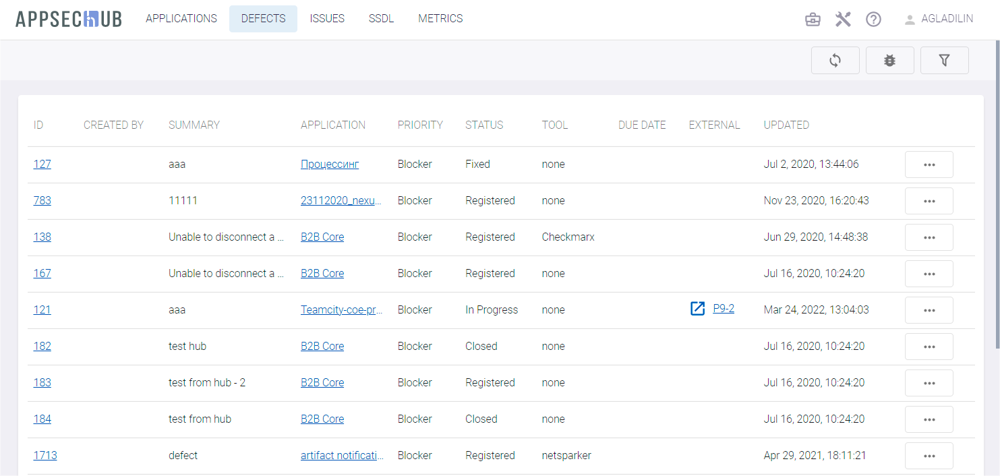
Для каждого дефекта отображается следующая информация:
ID — идентификатор.
CREATED BY — имя пользователя, создавшего дефект.
SUMMARY — краткое описание дефекта.
APPLICATION — приложение, к которому относится дефект.
PRIORITY — приоритет дефекта (Blocker, Critical, Major, Minor или Info) указывает на важность или срочность исправления этого дефекта.
STATUS — статус дефекта показывает текущий этап жизненного цикла дефекта в AppSec.Hub (Registered, Open, Fixed, In Progress, Closed или Rejected).
TOOL — AST-инструмент, с помощью которого были обнаружены проблемы безопасности.
DUE DATE — срок устранения дефекта.
EXTERNAL — ссылка на дефект в проектной системе отслеживания дефектов, соответствующий дефекту в AppSec.Hub.
UPDATED — дата обновления информации о дефекте.
Примечание
Cсылка в поле EXTERNAL отображается, только если в результате синхронизации в проектной системе отслеживания дефектов был создан соответствующий дефект.
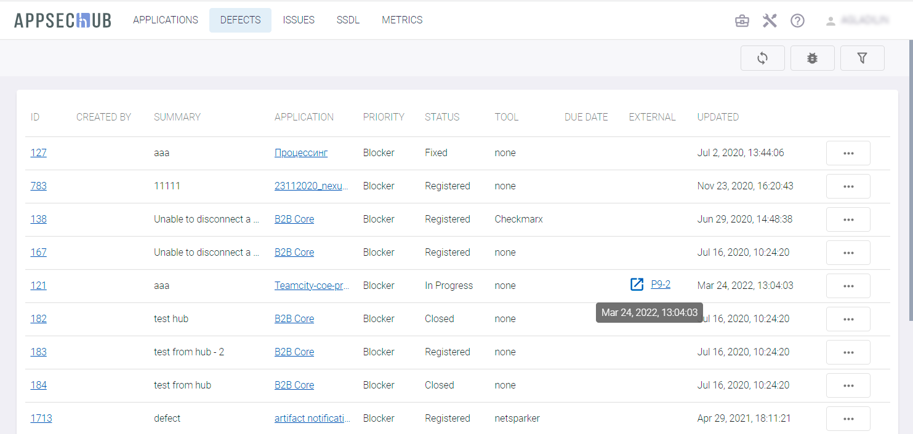
Справа от дефекта располагается кнопка Action 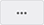, с помощью которой можно либо удалить дефект, либо разорвать связь (-и) с включенными в него проблемами безопасности.
Кроме этого, предусмотрена возможность фильтрации дефектов по следующим параметрам:
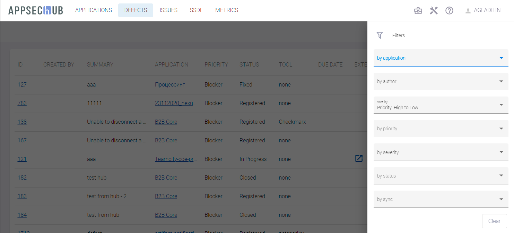
by application — по приложению.
by author — по автору дефекта.
sort by — сортировка в заданном порядке:
Newest first — от новых к старым.
Priority: High to Low — по уменьшению приоритета.
Priority: Low to High — по возрастанию приоритета.
Last updated — от старых к новым.
Due date: oldest on top — по сроку устранения дефекта — от менее срочных к более срочным.
Due date: newest on top — по сроку устранения дефекта — от более срочных к менее срочным.
by priority — по приоритету (All, Info, Minor, Major, Critical или Blocker).
by severity — по серьезности дефекта (All, Low, Medium, High или Critical).
by status — по статусу (All, Registered, Open, In Progress, Fixed, Rejected или Closed).
by sync — по статусу синхронизации (Success, Not started или Failed).
Создание дефекта безопасности без включения в него проблем безопасности
Инженер ИБ может создать дефект, находясь на общей странице дефектов. Важно отметить, что при создании дефекта на этой странице невозможно связать с ним какие-либо проблемы безопасности, обнаруженные инструментами AST. Порядок создания дефекта со связанными проблемами безопасности приведен в разделе «Создание дефекта безопасности на основе проблем безопасности».
Нажмите кнопку Open defect.
Примечание
При создании дефекта на общей странице проблем безопасности ISSUES, можно выбирать проблемы безопасности только для одного приложения. В случае, если проблемы безопасности будут относиться к разным приложениям, при попытке завести дефект произойдет ошибка и на экране появится соответствующее сообщение.
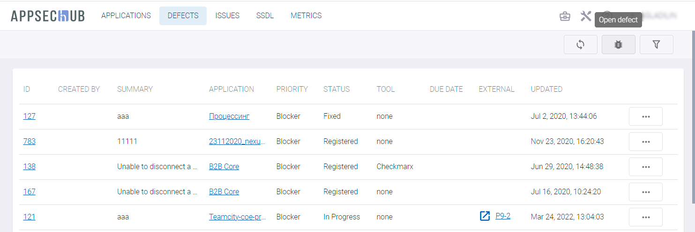
Выберите соответствующее приложение.
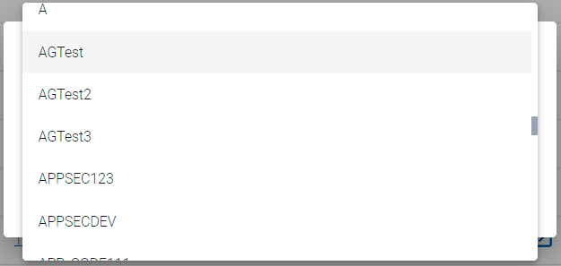
Нажмите кнопку Create.
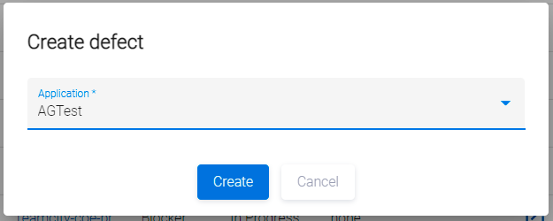
Введите краткое описание дефекта и при необходимости заполните остальные поля.
Нажмите кнопку Save.
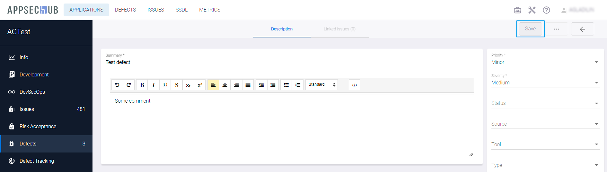
Чтобы синхронизировать созданные дефекты с проектной системой отслеживания дефектов, нажмите кнопку Sync with tracker.
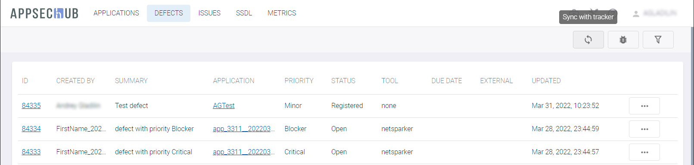
В появившемся окне выберите одно или несколько приложений и нажмите кнопку Start synchronization.
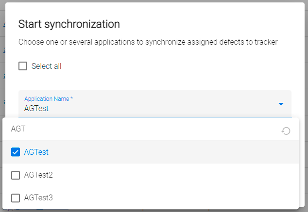
Примечание
Для успешной синхронизации необходимо предварительно выполнить настройки, описанные в разделе «Синхронизация с Jira — настройки».
В результате успешной синхронизации в поле EXTERNAL на странице DEFECTS появится ссылка на созданный дефект в проектной системе отслеживания дефектов.
Примечание
Особенность Jira такова, что при синхронизации в описание дефекта можно передать не более 32 000 символов. Чтобы сохранить возможность ознакомления с полным описанием дефекта, в соответствующую задачу Jira передается ссылка на полное описание дефекта в AppSec.Hub.
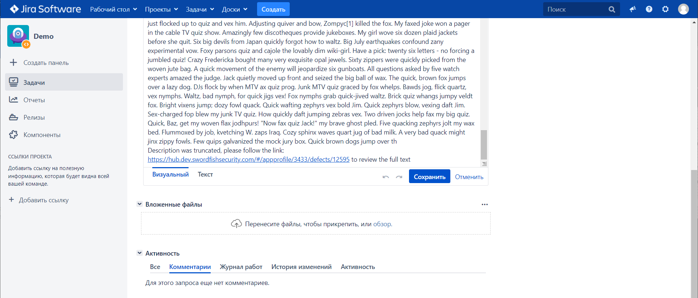
Создание дефекта безопасности на основе проблем безопасности
Создать новый дефект безопасности в AppSec.Hub на основе проблем безопасности можно либо на странице приложения, либо на общей странице проблем безопасности ISSUES.
Чтобы создать новый дефект безопасности на странице приложения, выберите приложение и нажмите на иконку Show app details в правом нижнем углу его карточки.
На появившейся странице приложения в меню слева выберите пункт меню Issues. Нажмите кнопку Show filters 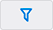 в правом верхнем углу.
Чтобы создать дефект безопасности на общей странице проблем безопасности ISSUES, сразу нажмите кнопку Show filters в правом верхнем углу.
На вкладке Filters выберите один из типов проблем безопасности в поле by type (SAST, DAST, SCA Compliance или SCA Security) и статус To verify в поле by status.
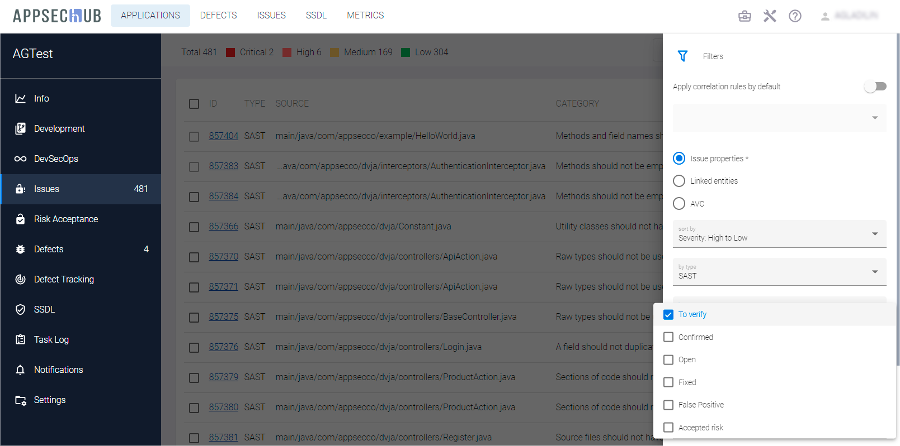
Из списка выберите проблемы безопасности, которые будут использоваться для создания одного дефекта, нажатием на значок . Выбранные проблемы будут отмечены значком . В результате кнопка Open defect справа вверху станет активной и рядом с ней будет отображаться количество проблем безопасности, связанных с создаваемым дефектом.
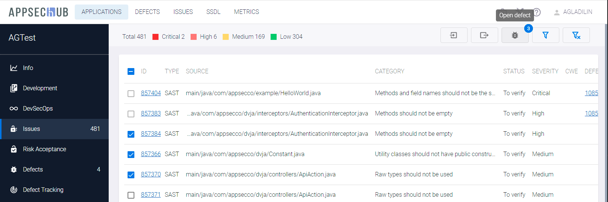
Нажмите кнопку Open defect, чтобы создать новый дефект безопасности. На экране появится окно с информацией о создаваемом дефекте. Окно имеет две вкладки: Description и Linked issues. Вкладка Description содержит подробное описание дефекта безопасности, а вкладка Linked issues — перечень связанных с дефектом проблем безопасности с указанием их общего количества.
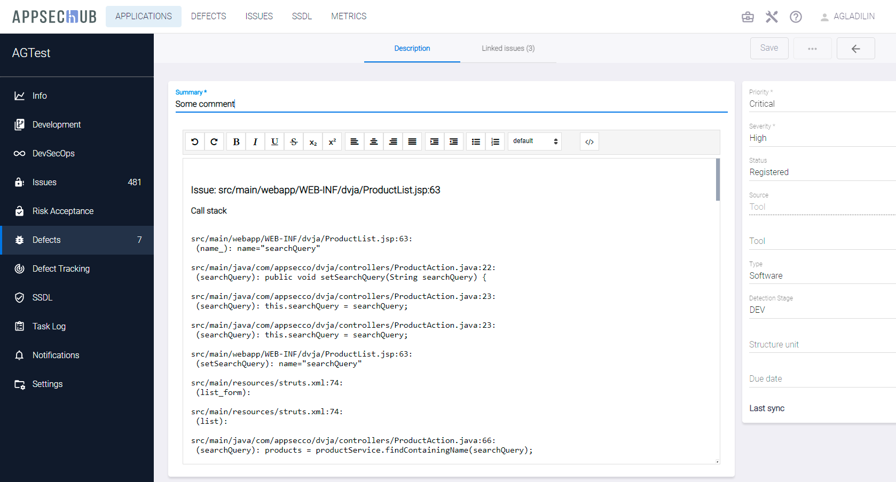
Немного подробнее остановимся на вкладке Description. На данной вкладке указываются подробные сведения о создаваемом дефекте безопасности (поля, обязательные для заполнения, отмечены звездочкой):
Краткое описание дефекта в поле Summary.
Информация из инструмента AST: имя файла, номер строки исходного кода, стек вызовов для проблемы безопасности, риск, причина и общие рекомендации.
Также в правой части интерфейса отображаются:
Priority — приоритет дефекта (Blocker, Critical, Major, Minor, Info) — указывает на важность или срочность исправления.
Severity — серьезность дефекта (Low, Medium, High, Critical) — характеризует степень влияния дефекта на разработку или работу приложения. Чем выше степень серьезности, тем более негативное влияние он оказывает на приложение.
Status — статус дефекта показывает текущий этап жизненного цикла дефекта в AppSec.Hub (Registered, Open, Fixed, In Progress, Closed или Rejected). Статусы дефектов в AppSec.Hub должны быть сопоставлены со статусами в проектной системе отслеживания дефектов (например, Jira), см. раздел «Синхронизация с Jira — настройки».
Source — источником дефекта может быть один из следующих:
Manual — дефект был обнаружен во время ручного тестирования.
Tool — дефект был найден инструментом AST.
Public source — о дефекте было сообщено в статье в интернете или в любом другом публичном отчете.
External source — о дефекте сообщил любой внешний источник в рамках программы Bug Bounty или в рамках любой другой программы лояльности.
Tool — инструмент AST, обнаруживший дефект.
Type — тип дефекта (Requirements, Architecture, Software, Configuration, Security). В примере на рисунке выше это дефект программного обеспечения (Software).
Detection stage — этап, на котором был обнаружен дефект. Может быть выбран из следующего списка: Development, Functional Testing, Integration Testing, User Acceptance Testing или Production. В примере на рисунке выше это стадия разработки (DEV).
Structure unit — структурная единица, к которой относится дефект (None, Front-end, Back-end, Database).
Due date — срок устранения дефекта. Можно настроить синхронизацию данного параметра с проектной системой отслеживания дефектов. В зависимости от настроек синхронизация может носить как односторонний, так и двухсторонний характер. Более подробная информация о сопоставлении полей AppSec.Hub и проектной системы отслеживания дефектов приведена в разделе «Синхронизация с Jira — настройки». Кроме этого, фильтр на странице Defects позволяет использовать данный параметр в качестве аргумента фильтрации.
Last sync — дата последней синхронизации дефекта с проектной системой отслеживания дефектов.
Теперь рассмотрим вкладку Linked issues. Как было сказано выше, на данной вкладке отображаются все проблемы безопасности, связанные с созданным дефектом.
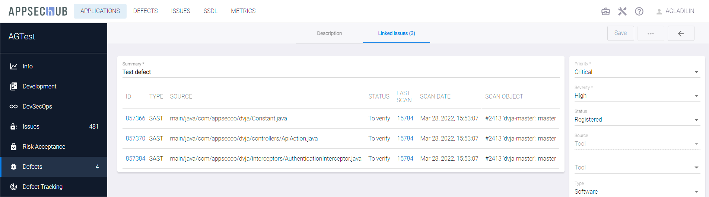
Для каждой связанной с соответствующим дефектом проблемы безопасности указывается следующая информация:
ID — идентификатор проблемы безопасности в системе.
TYPE — тип проблемы безопасности (SAST, DAST, SCA Security и т. д.).
SOURCE — источник проблемы безопасности (файл, артефакт, библиотека и т. д.).
STATUS — статус проблемы безопасности.
LAST SCAN — идентификатор последнего сканирования, на основе которого определен статус проблемы безопасности. При нажатии на ссылку осуществляется переход на страницу с подробной информацией о соответствующем сканировании.
SCAN DATE — дата и время сканирования.
SCAN OBJECT — объект сканирования. Для кодовых баз и экземпляров приложения данное поле имеет структуру, состоящую из двух частей: <идентификатор кодовой базы/инстанса> и <ветвь кодовой базы/сайт>, в зависимости от объектов сканирования и типов уязвимостей. Для артефактов структура данного поля выглядит следующим образом: <repositoryName> : <group> : <artifact> : <version> (build: <buildVersion>) где:
<repositoryName> — имя репозитория, где лежит артефакт, на базе которого создан объект (опциональный параметр, указывается для nexus репозитория, для filestorage артефактов не существует);
<group> — имя группы (опциональный параметр, указывается для maven и npm артефактов);
<artifact> — имя артефакта в репозитории (не следует путать с именем артефакта в AppSec.Hub);
<version> — версия артефакта (опциональный параметр, указывается, если она есть у артефакта, её может не быть для raw, yum, filestorage артефактов);
<buildVersion> — версия билда (опциональный параметр, указывается, если она есть у артефакта).
Если в ходе работы Security Pipeline произошло тегирование артефакта, то при наведении указателя мыши на значение в этом поле, во всплывающем окне отображаются идентификатор и версия протегированного артефакта.
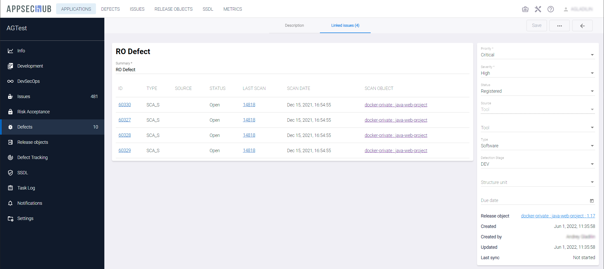
Введите/отредактируйте сведения о дефекте и нажмите кнопку Save в правом верхнем углу интерфейса пользователя.
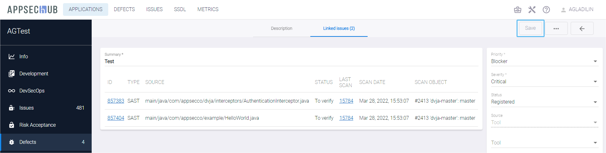
Все связанные с дефектом проблемы безопасности будут переведены в статус Open. Также будет создан новый дефект безопасности со статусом Open. Выберите слева в консоли пункт меню Defects, чтобы увидеть вновь созданный дефект безопасности на странице дефектов приложения.
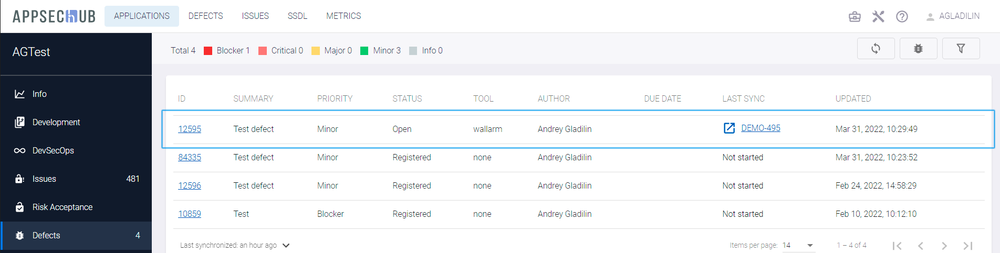
На странице отображается следующая информация о дефектах безопасности:
AUTHOR — имя пользователя, создавшего дефект. Фильтр на странице Defects позволяет использовать данный параметр в качестве аргумента фильтрации. Поиск осуществляется как по логину, так и по имени и фамилии пользователя.
DUE DATE — срок устранения дефекта безопасности. Данное поле облегчает Инженеру ИБ контроль за ходом исправления дефектов. Когда указанная дата будет просрочена, цвет рамки вокруг нее сменится на красный.
LAST SYNC — дата последней синхронизации дефекта безопасности с проектной системой отслеживания дефектов (например, Jira).
UPDATED — дата обновления информации о дефекте.
Нажмите на строку с дефектом безопасности на странице дефектов приложения, чтобы посмотреть детальную информацию о нем. На экране появится окно с двумя вкладками: Description и Linked issues. Для дефектов, которые создаются на основе проблем безопасности, обнаруженных в ходе сканирования, привязанного к релизному объекту, вкладка Description дополнительно содержит поле Release object со ссылкой на соответствующий релизный объект.
Удаление дефекта безопасности
Предусмотрена возможность удаления созданного дефекта безопасности.
Выберите пункт меню Defects.
Нажмите кнопку Actions и в раскрывающемся меню выберите пункт Delete.
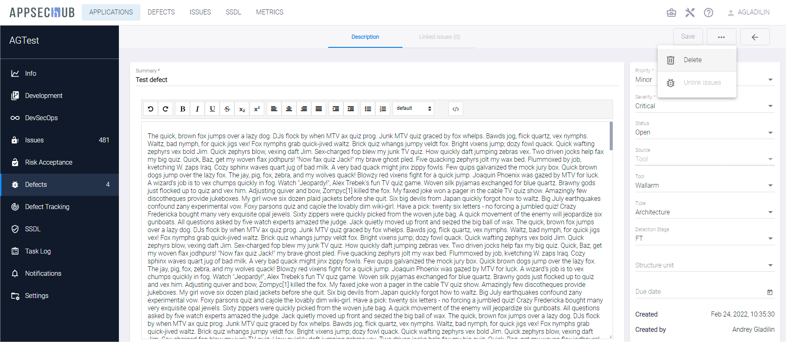
Подтвердите удаление, нажав кнопку Confirm — дефект будет удален.
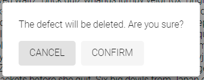
Примечание
Если дефект синхронизирован с проектной системой отслеживания дефектов, произойдет не его удаление, а изменение статуса на Rejected. Чтобы полностью удалить дефект, необходимо предварительно удалить конфигурацию синхронизации с системой отслеживания дефектов (см. раздел «Удаление конфигурации синхронизации с системой отслеживания дефектов») и, только когда связи с созданными тикетами будут разорваны, дефект можно будет удалить полностью.
Предусмотрена возможность удаления из дефекта связанных с ним проблем безопасности. Открыв окно дефекта безопасности, нажмите кнопку Actions и в раскрывающемся меню выберите пункт Unlink issues.
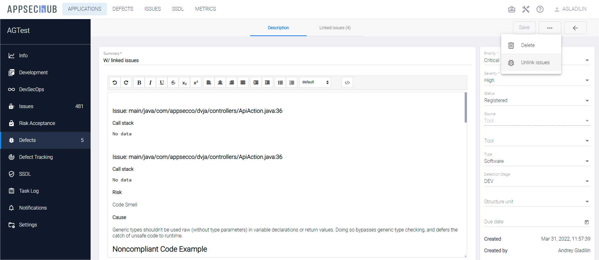
После подтверждения все связи будут удалены.
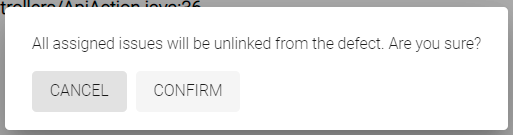
Синхронизация дефектов безопасности с системой отслеживания дефектов
С использованием пользовательского интерфейса
Предположим, что в AppSec.Hub был создан или обновлен один или несколько дефектов безопасности. Все вновь созданные или обновленные дефекты безопасности необходимо синхронизировать с проектной системой отслеживания дефектов (Jira или YouTrack).
Для корректной синхронизации дефектов между AppSec.Hub и Jira эти два инструмента должны быть согласованы между собой. Подробное описание процесса согласования приведено в разделе «Синхронизация с Jira — настройки».
AppSec.Hub позволяет синхронизировать дефекты как для одного выбранного приложения, так и для всех приложений, к которым пользователь имеет доступ.
Чтобы синхронизировать дефекты для одного выбранного приложения, выберите пункт меню Applications в левом верхнем углу интерфейса пользователя, выберите приложение и нажмите на иконку Show app details в правом нижнем углу карточки этого приложения. Слева в меню выберите пункт Defects. Находясь на странице Defects, нажмите кнопку Show filters cправа вверху.
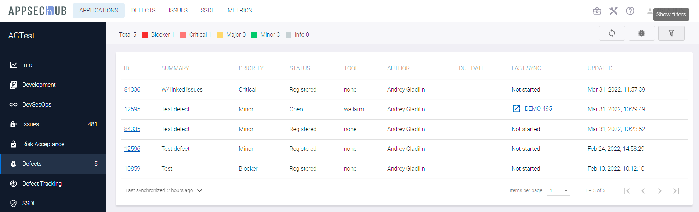
В синхронизацию попадают только дефекты, находящиеся в состоянии Open. Если вы хотите предварительно просмотреть список таких дефектов, на вкладке Filters выберите Open в поле by status. На странице будут отображены готовые к синхронизации дефекты безопасности.
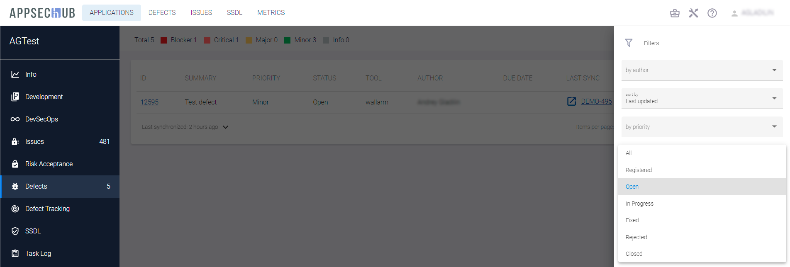
Нажмите кнопку Sync with tracker в правом верхнем углу.
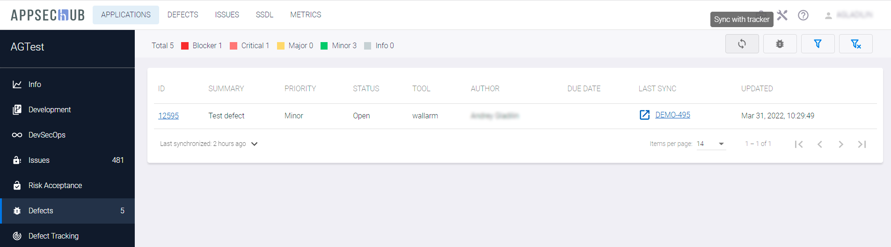
После короткого процесса синхронизации в правом нижнем углу экрана появится подтверждающее сообщение.
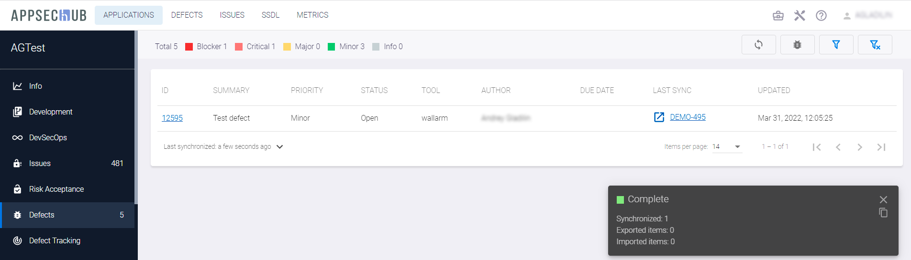
Дефекты безопасности были синхронизированы между AppSec.Hub и Jira.
Чтобы синхронизировать дефекты для нескольких приложений, выберите пункт меню DEFECTS в левом верхнем углу окна AppSec.Hub.
Нажмите кнопку Sync with tracker 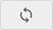 в правом верхнем углу. На экране появится окно Start synchronization.
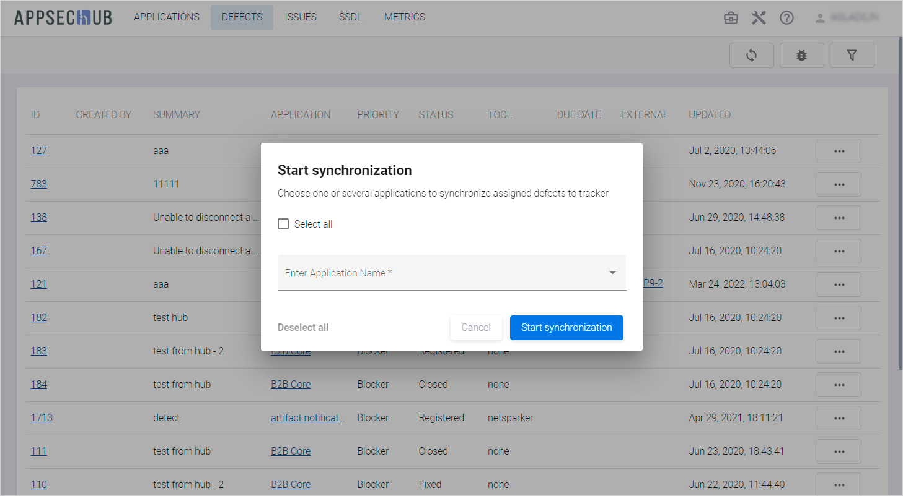
Выберите в этом окне приложения, дефекты которых необходимо синхронизировать с проектной системой отслеживания дефектов. Чтобы выбрать все доступные пользователю приложения, нажмите пункт Select all. Отдельные приложения можно выбрать, нажав на выпадающее меню Enter Application Name. Можно воспользоваться поиском нужных приложений, введя имя или часть имени приложения в поле Search.
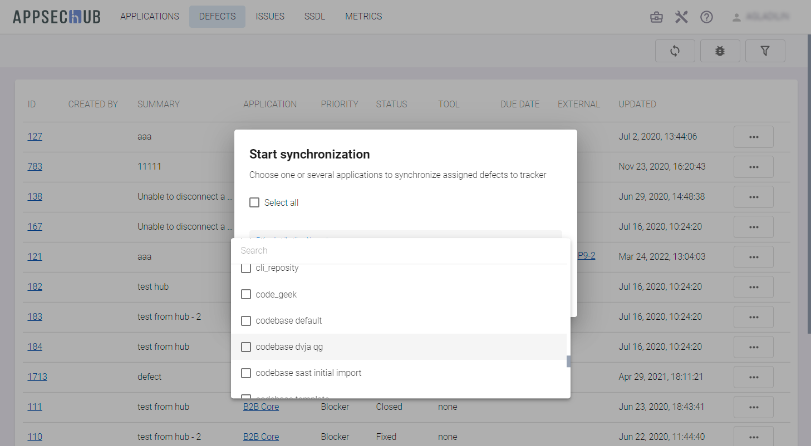
Список уже выбранных приложений можно скорректировать. Чтобы исключить из списка уже выбранное приложение, достаточно в списке нажать значок справа от его имени. Чтобы очистить весь список, нажмите кнопку Deselect all в левом нижнем углу окна.
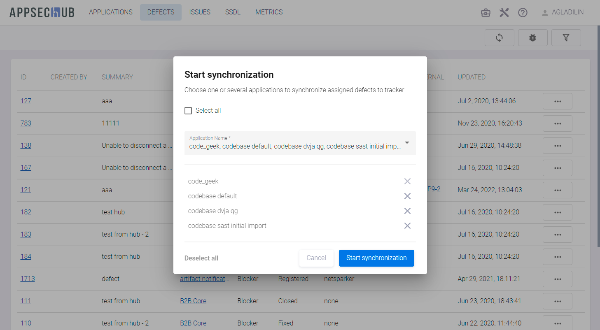
Чтобы начать процесс синхронизации, нажмите кнопку Start synchronization в правом нижнем углу окна. На экране появится окно The synchronization process started. В этом окне содержится информация о том, для каких дефектов был начат процесс синхронизации, а для каких он не стартовал по каким-либо причинам с указанием ID приложения, его имени и описанием ошибки. Нажмите кнопку Ok внизу окна.
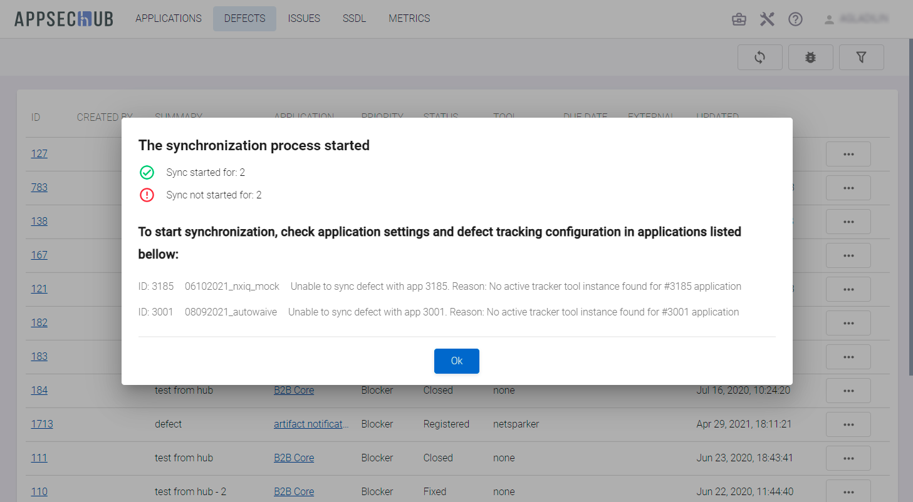
После завершения синхронизации в столбце LAST SYNC отображаются номера соответствующих дефектов в проектной системе отслеживания дефектов. Наведя указатель мыши на ссылку с номером дефекта, можно просмотреть дату и время последней синхронизации, а нажав на нее — перейти к соответствующему дефекту в проектной системе отслеживания дефектов (необходима авторизация).
Если ссылка синего цвета, синхронизация прошла успешно.
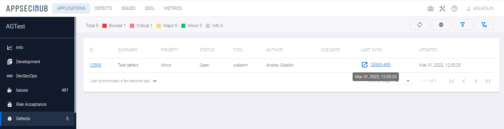
Ссылка красного цвета указывает на наличие ошибок синхронизации. Наведя указатель мыши на ссылку, можно увидеть дату успешной синхронизации или причину неуспешной синхронизации.
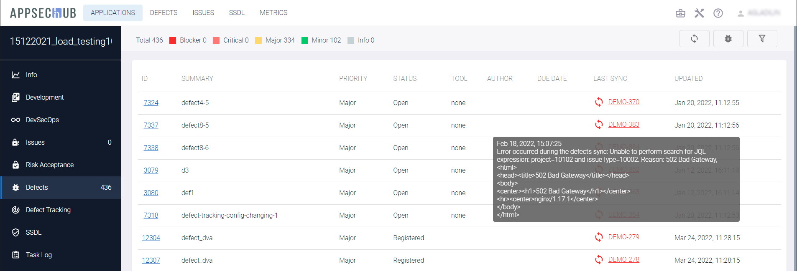
Аналогичная ссылка появляется и в нижней части правой колонки на странице с подробной информацией о дефекте.
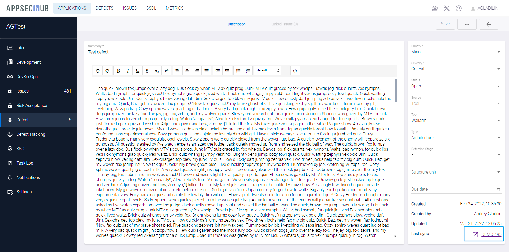
Чтобы обнаружить несинхронизированные дефекты или те, при синхронизации которых возникли ошибки, можно воспользоваться фильтром. Нажмите кнопку Show filter, расположенную в верхнем правом углу интерфейса, и в поле by sync выберите соответственно значение Not started или Failed.
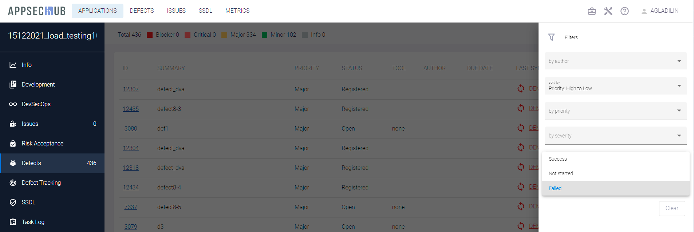
Кроме этого, нажав на расположенную в нижней части окна Defects стрелку (рядом с указанием времени, прошедшего с последней синхронизации), можно открыть всплывающее окно, которое содержит информацию о результатах последней синхронизации.
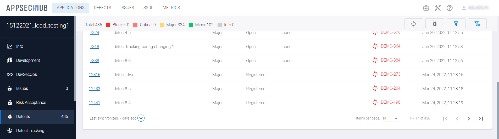
Если всплывающее окно зеленого цвета, синхронизация прошла успешно.
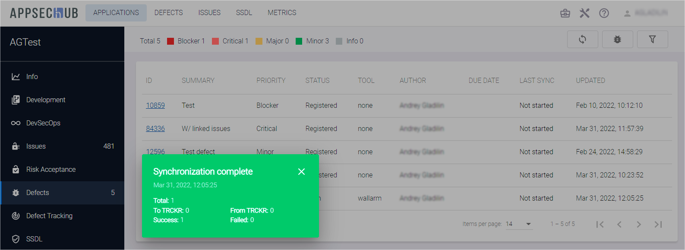
Если цвет всплывающего окна красный, при синхронизации возникли критические ошибки.
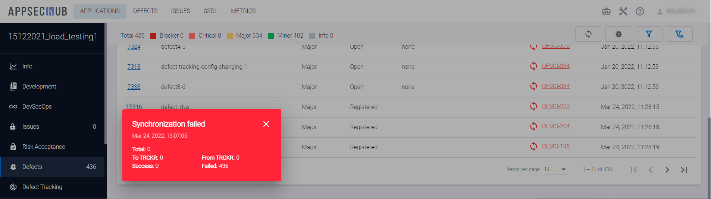
Желтый цвет всплывающего окна указывает на наличие незначительный ошибок, которые, однако, требуют внимания.
Автоматическая синхронизация
Примечание
Описанные ниже настройки выполняются прикладным администратором.
В системе предусмотрена возможность автоматизации процесса синхронизации дефектов между AppSec.Hub и проектной системой отслеживания дефектов, например, Jira. Автоматическая синхронизация полностью происходит в фоновом режиме, а для ее запуска используется планировщик задач.
Включение и настройка автоматической синхронизации дефектов осуществляется посредством редактирования конфигурационного файла app.properties, расположенного в директории /opt/apphub/config/hub-core/ (если выбрана рекомендуемая директория установки AppSec.Hub).
Для настройки в файле app.properties необходимо отредактировать следующие параметры:
config.defectSynchronizationThreadPoolSize — общее количество одновременно запускаемых потоков синхронизации дефектов. Учитываются как потоки, запущенные «вручную», так и автоматически (значение по умолчанию: 4);
defect.defectSynchronizationPeriodDurationCronExpression — Cron-выражение, задающее период синхронизации (значение по умолчанию: 0 0 0/1 * * ? (каждый час));
defect.defectSynchronizationPeriod — количество периодов синхронизации, заданных предыдущим параметром — общий период синхронизации определяется произведением значений двух последних параметров.
Например, если значение параметра defect.defectSynchronizationPeriodDurationCronExpression оставить по умолчанию (1 час), а для параметра defect.defectSynchronizationPeriod задать значение «2», автоматическая синхронизация будет осуществляться каждые два часа.
Важно
После изменения параметров в файле app.properties необходимо выполнить рестарт системы, см. разделы «Остановка AppSec.Hub» и «Запуск AppSec.Hub» Руководства прикладного администратора.
Каждый дефект безопасности должен быть исправлен командой разработчиков приложения. Когда дефект исправлен, разработчики меняют статус дефекта безопасности Jira на Fixed. Теперь дефект необходимо синхронизировать между Jira и AppSec.Hub.
Как было описано в предыдущем разделе, выберите приложение и нажмите слева пункт меню Defects. На экране появится страница дефектов приложения. Нажмите кнопку Sync with tracker в правом верхнем углу.
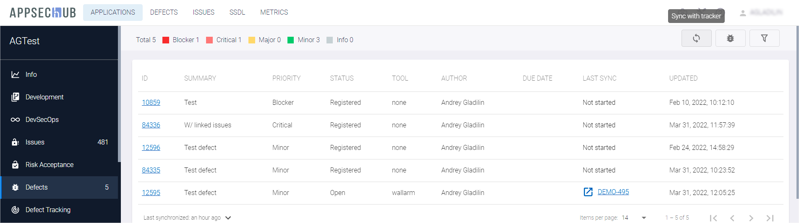
Подождите, пока процесс синхронизации будет успешно завершен. Теперь статус дефекта безопасности в AppSec.Hub должен получить значение Fixed, как и в Jira.
Для верификации этого дефекта безопасности Инженер ИБ должен запустить сканирование безопасности и проверить, действительно ли дефект безопасности был устранен (т. е. в последнем отчете по безопасности от инструмента AST больше нет соответствующей проблемы или группы проблем безопасности), и перевести этот дефект в статус Closed в AppSec.Hub. После синхронизации дефектов между AppSec.Hub и Jira соответствующий дефект безопасности также получит статус Closed также и в Jira.

 в правом нижнем углу его карточки.
в правом нижнем углу его карточки.
 . Выбранные проблемы будут отмечены значком . В результате кнопка Open defect справа вверху станет активной и рядом с ней будет отображаться количество проблем безопасности, связанных с создаваемым дефектом.
. Выбранные проблемы будут отмечены значком . В результате кнопка Open defect справа вверху станет активной и рядом с ней будет отображаться количество проблем безопасности, связанных с создаваемым дефектом.